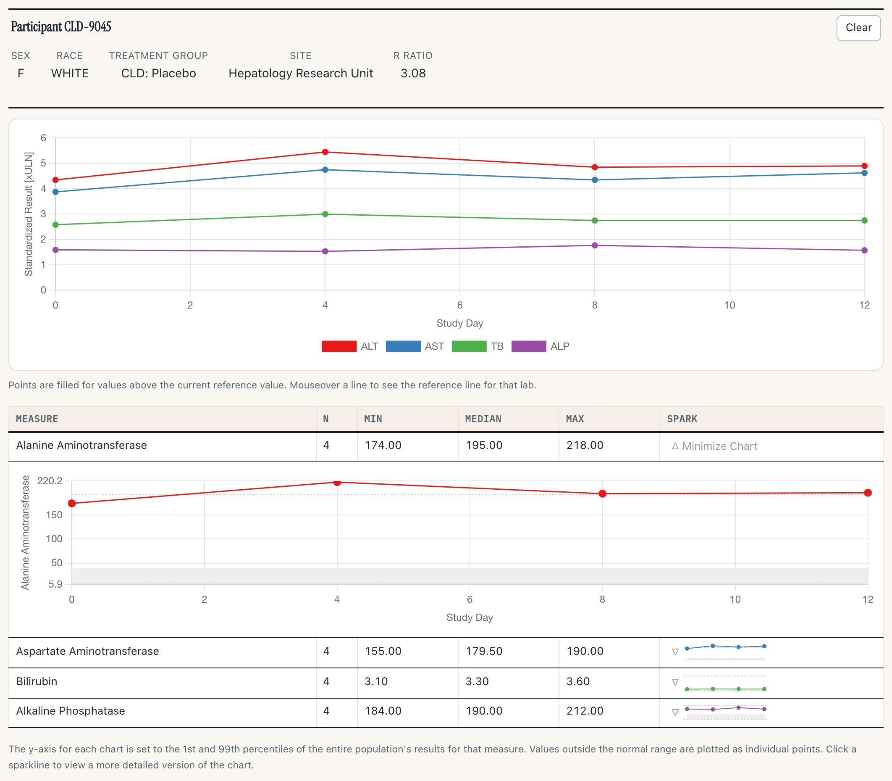
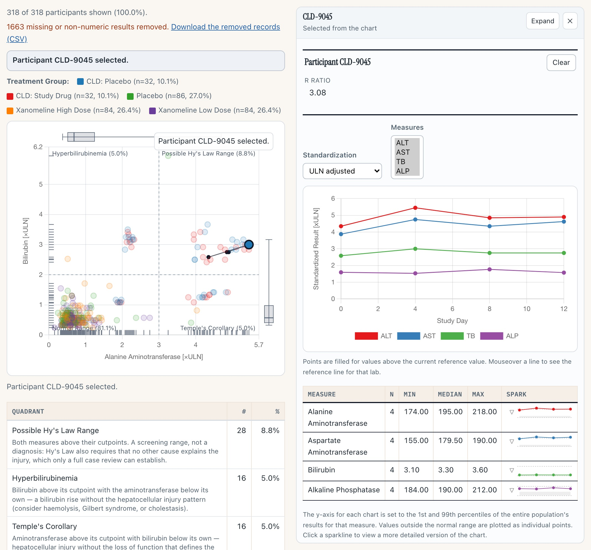
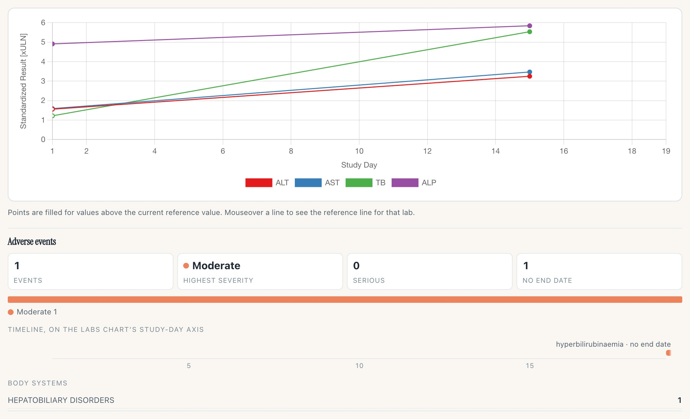
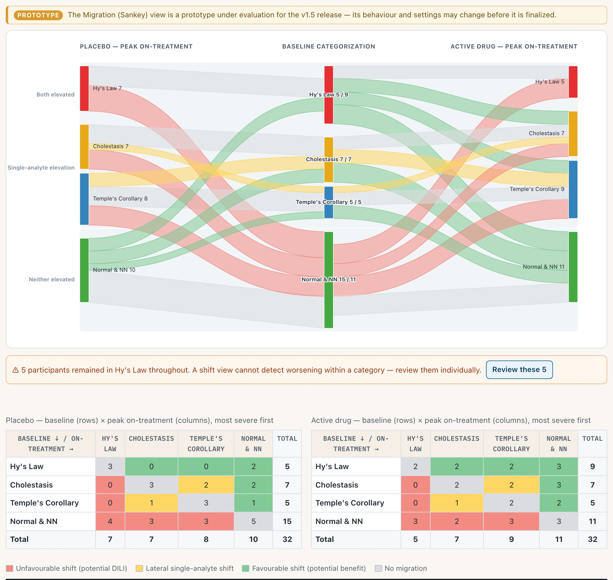
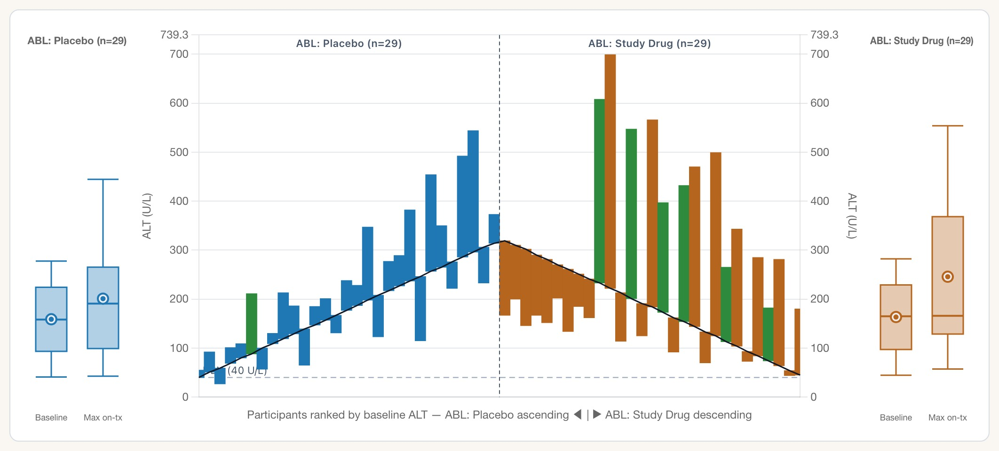
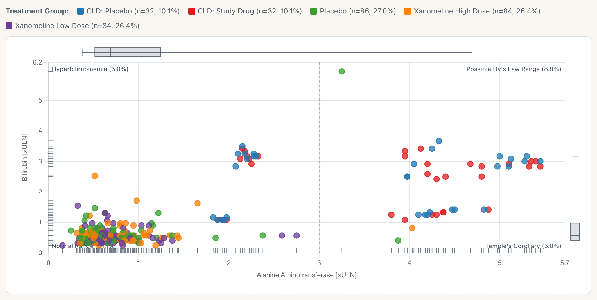
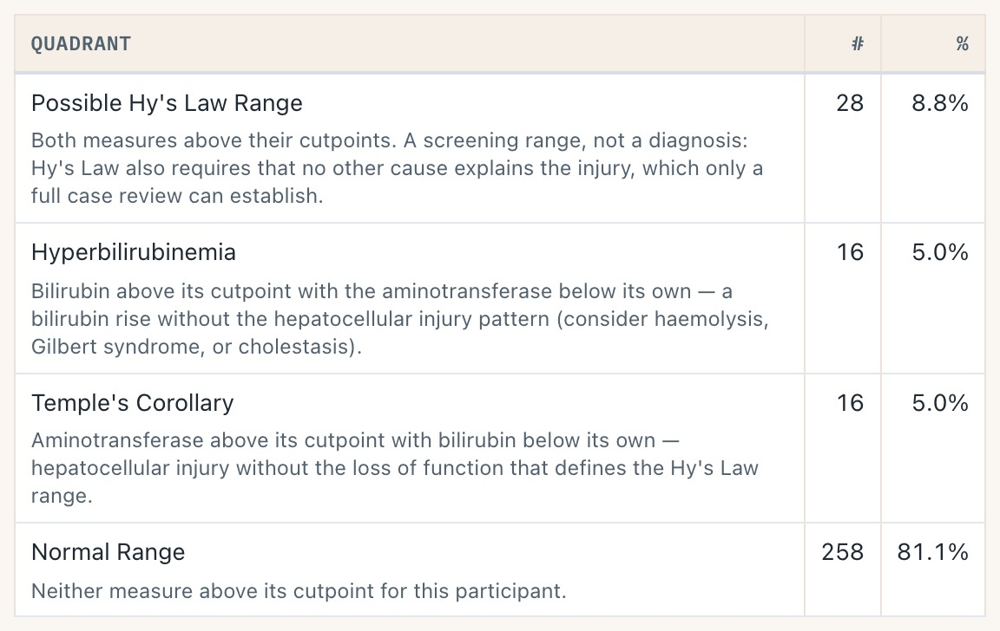
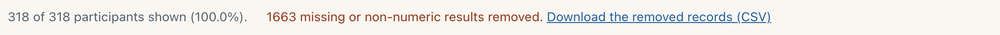
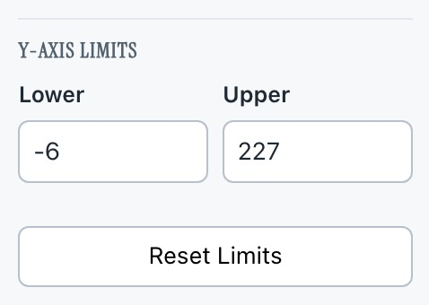
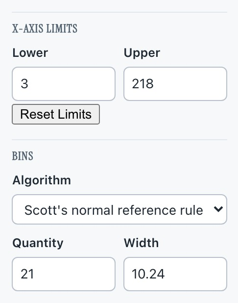

safety.viz release review 2026-07-25
Four groups of work sit between v1.4.1 and this release. Each one below is a line on what changed, why it matters when you are reading a study, a capture of it running, and a way into the live demo to check it yourself. Every capture on this page was taken from the release candidate — the dev site — on 25 July. sv#112 joined the release that evening and removed the profile dock; the profile captures were re-taken against the rail after it merged, and every other capture predates it and is unaffected by it.
6 PRs, all merged to dev 2 new renderers 1 052 unit + 219 browser tests promotes dev → main
Drilling into one person used to mean whatever detail panel a given renderer happened to have. v1.5.0 replaces that with a single chart-agnostic module — demographics header, labs-over-time spaghetti, per-measure table — that any chart can hand a participant to. Six lab renderers adopted it in this release: hep-explorer, shift-plot, outlier-explorer, delta-delta, histogram and qt-explorer. sv#112 then added a second data domain — adverse events — which let ae-explorer and ae-timelines adopt it too.
This section shows profile v2. sv#112 merged to dev on the evening of 25 July, and its D4 removes the dock: the profile now opens in a right-hand rail beside the chart, gains an expand state, and reads adverse events as well as labs. The captures below were re-taken against that build. The module itself and the participantsSelected contract are unchanged — only the surfacing and the second domain are new.
The two modules in this clip share no internals. The scatter dispatches participantsSelected; the standalone profile below it is listening. That event is the contract — and the part of this feature that is stable.
4 s clip · press play
The demo page runs the Hepatic Safety Explorer with its own rail off, and mounts the profile separately underneath. One click on the top-right point selects CLD-9045 and the profile below fills in — no shared state, just the event.

1 2 3 4
The same module, opened by hep-explorer rather than mounted standalone. Note what the chart did: it re-laid out narrower rather than being covered, so the Hy's-Law point the click came from is still on screen and still in place. The rail head names the participant, says where the selection came from, and carries Expand (fills the renderer's own container, Escape collapses) and a close that clears the chart's selection. Idle, the rail takes no width at all. This replaces the dock that sat below the chart in v1 — the same module, a different surface.

Participant 01-705-1186 — the worst eDISH position in this cohort that also carries adverse-event records. Four figures, a severity mix, and a timeline drawn on the labs chart's own study-day axis, which is the point: the two tracks share one domain, so the bar and the lab excursion above it are read against the same clock. This capture happens to show that domain doing its job — the labs stop at day 15, the event starts on day 19, and the axis extends to day 19 to keep it visible instead of cropping it. The event has no resolution date recorded, so it reads as open-ended and the label says so, rather than becoming a zero-length tick.
Why it matters
Every lab chart now answers “who is that point?” the same way, so a reviewer learns one surface instead of six. It also unblocks the charts that never had a drill-down at all.
It ships Experimental on purpose, and that licence has already been spent once: hub#75 — the rail, the expand state and the adverse-event domain — landed inside this same release as sv#112 rather than after it, which is why the surface here is not the one the earlier PRs shipped. If you wire the profile into your own chart, wire the event, not the surface.
Try it
Open the Hepatic Safety ExplorerFor adverse events, open the participant-profile demo instead — it is the one wired with an AE dataset. Note that the crafted CLD-* Hy's-Law cases carry no AE records, so pick a point outside that cluster to see the block populated.
Two tools for trials that enrol participants whose liver tests are already abnormal — chronic liver disease, NASH, hepatitis. In those studies the eDISH ×ULN quadrants fill with people who were there on day one, and the scatter stops discriminating. Both come from Amirzadegan et al., Drug Safety 2025;48:443–453.

1 2 3 44 s clip · press play
Hover a ribbon to read the shift it represents, click to select it, then take “Review these N in the composite plot” — the composite view opens with exactly those participants carried across and ringed. That is the paper's Sankey → composite workflow, executable rather than described.

1 2 3 4Why it matters
These are the first two displays in the portfolio aimed squarely at abnormal-baseline populations, where the standard eDISH read is misleading rather than merely noisy.
Both are marked prototype in the gallery: the clinical judgement calls in design #43 are still open, so behaviour and settings can move before they are called finished.
Try it
Open hep-explorer, then switch View to MigrationFour sets of features deferred from the v1.3 coordinated-core port land together: direct manipulation of the cut-lines, marginal distributions, the chart saying what it means, and traceable data handling.
5 s clip · press play · watch the ALT Reference Line box on the left
Take hold of the dashed line and move it: the corner percentages, the quadrant summary table and the ALT Reference Line input all move with it, and the value the drag writes is the same number you would have typed. A selected participant survives the drag.

1 2 3 4All four follow the filtered view rather than the whole cohort, so narrowing to one arm redraws them. Setting Marginal Distributions to Hidden takes them away again — it is a control, so whether they default on is still your call.

Each quadrant carries its clinical reading in the summary table — including that Possible Hy's Law is a screening range, not a diagnosis. Point-size encoding explains itself, and the standing “not validated for clinical use” caution sits under every view.
Open sub-decision: the quadrant prose is agent-drafted and flagged needs-jeremy-review in the merged matrix.

Dropped records download as a CSV naming, per row, which mapped column failed — so “1,663 removed” stops being a number you have to trust. Below-LLOQ results are imputed by the original renderer's documented rules, and reported rather than absorbed.
5 s clip · press play
Hovering a bar gives the whole case in one card: arm, baseline ALT, maximum on-treatment ALT and the day it happened, the change in both U/L and ×baseline, and peak bilirubin. The flanking panels label what they are — box is IQR with the median rule, whiskers 5th–95th, ○ the mean — which was your #83 ask.
Why it matters
The cut-lines are the argument the eDISH scatter makes. Being able to move them and watch the population reclassify is how a reviewer tests whether a signal is real or an artefact of where the line happened to sit.
Six of the eight #88 gaps close here. Still open and not in v1.5.0: transition animation (sv#46), listing sparklines (sv#48) and the exposure track (sv#49, needs adex).
Try it
Open hep-explorer on the eDISH viewThe limit inputs used to sit empty until you typed into them, which made auto and override look identical. They now load carrying the data-driven values the chart actually resolved, so you can see the current limits and nudge one without having to supply both.

Safety Outlier Explorer. Lower and Upper arrive filled with the domain this render resolved. Clear a box to hand that side back to auto; Reset Limits drops both.

Safety Histogram, with ALT selected. The same treatment reaches the bin quantity and width. The boxes seed blank only until a render has a single measure's domain to resolve — on “All Measures” there is no one domain to show.
Why it matters
Small, but it removes a class of confusion: an empty box used to mean both “auto” and “I have not touched this”, and typing one limit against a blank other could send an inverted domain to the chart. The invert guard now reads the displayed value, so a crossing entry swaps the pair instead of breaking the axis.
Try it
Open the outlier exploreradbds cohort: 318 participants for the eDISH views, 58 for the abnormal-baseline waterfall. The adverse-event demo reads adae, which covers 254 of those 318 — but none of the 24 crafted CLD-* Hy's-Law cases, so those participants' profiles report no events. That is a gap in the demo fixture, not in the module.dist/safety.viz-1.4.1/ is restored to the bytes v1.4.1 shipped.Where this fits
This page is the visual companion to the v1.5.0 release plan, which lists the eight items in review order and what checking R1 sets in motion. The user-facing release notes live in the promotion PR body.
The rest of the candidate